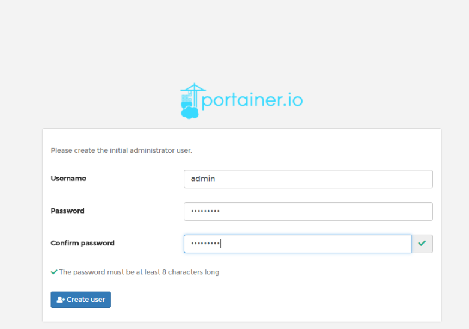

原文出处:本文由博客园博主lalabobo1提供。
原文连接:https://www.cnblogs.com/ziyegediao/p/11771171.html
原文连接:https://www.cnblogs.com/ziyegediao/p/11771171.html
为了解决上回说到的问题,在网上找了找 找到了一个 非常有好的可视化界面管理工具.
Portainer 是什么东西 (开源轻量级)
Portainer是Docker的图形化管理工具，提供状态显示面板、应用模板快速部署、容器镜像网络数据卷的基本操作（包括上传下载镜像，创建容器等操作）、事件日志显示、容器控制台操作、Swarm集群和服务等集中管理和操作、登录用户管理和控制等功能。功能十分全面，基本能满足中小型单位对容器管理的全部需求。
我用到的图形化管理,应用快速部署,时间日志显示,容器控制台操作 (应为我用的比较简单没有太多深入了解)
Docker和窗口下载镜像
搜索 docker search portainer
拉取 docker pull portainer/portainer
启动 docker run -d -p 9000:9000 --restart=always -v /var/run/docker.sock:/var/run/docker.sock --name prtainer-test portainer/portainer
ps: docker 运行命令讲解
-d :后台运行
-p:前边是外访问端口:后边是对内访问端口
--restart=always: 当 docker 重启时，容器自动启动。
-v:磁盘目录映射
--name: 为容器指定一个名称
见识一下 浏览器访问(127.0.0.1:9000) 就可以访问页面
新建用戶

我选的是本机 还有很多模式 欢迎深究
咣当
一些基本的功能